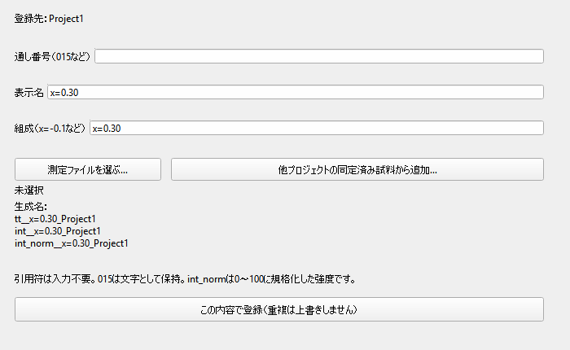
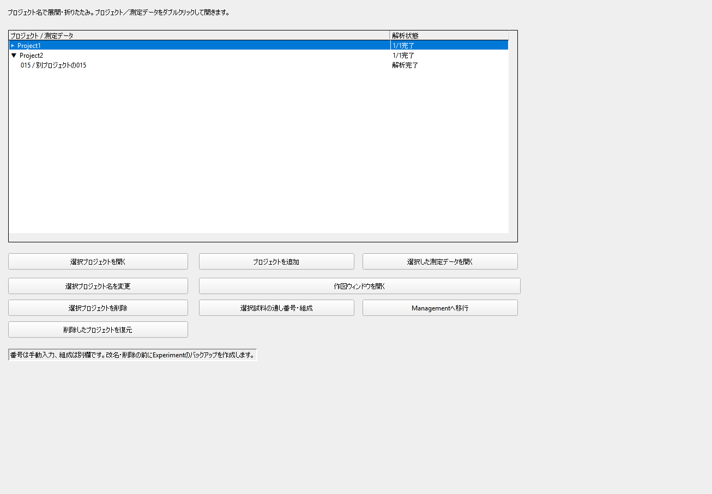
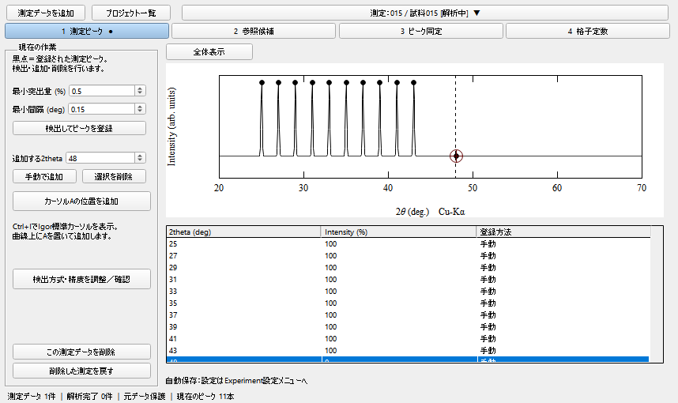
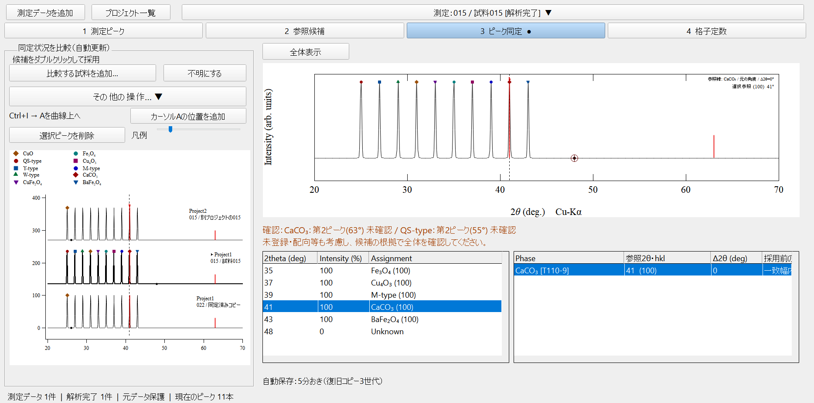
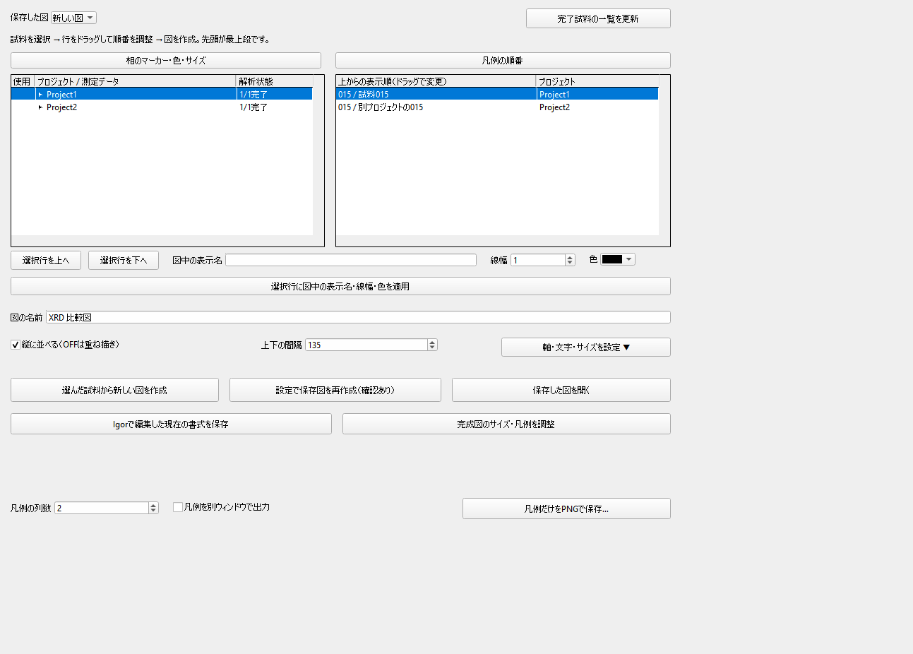
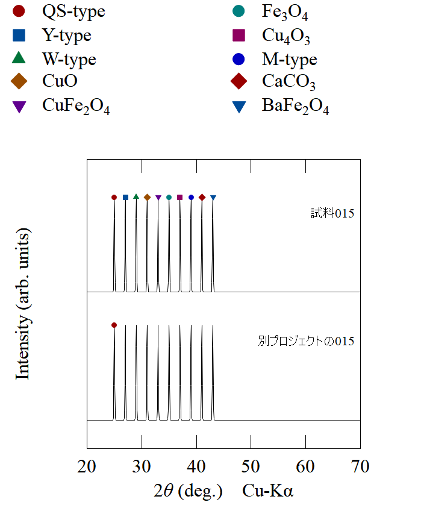

操作ガイドの入口 ｜ XRD Workbench v1.2.0
初めて使う方向け
1. 導入する
- Igor Pro 9以上を使用します。ZIPを新しいフォルダへ展開します。
- 現在のExperimentを別名の.pxpへ保存します。
- 旧版のProcedureを閉じ、新版のxrd_main.ipfだけを開きます。IPF一式は同じフォルダに置いてください。
- 「XRD Workbench」「参照値」「作図」「Experiment設定」のメニューが表示されます。F6で現在の解析画面を開けます。
同時に複数の版を読み込まないでください。今回の版は作業ブランチのv1.1.0を基にしています。
2. プロジェクトと測定データを登録する
「XRD Workbench → プロジェクトを追加」でプロジェクト名を決めます。「測定データを追加」を押すと、通し番号・表示名・組成を同じ画面で入力できます。
- 通し番号に015など、割り当て済みの番号を入力する。自動採番はしません。
- 表示名を入力する。入力を確定すると、同じ文字を組成にも入れます。
- 組成を必要に応じて編集する。組成を変えても表示名は変わりません。引用符は不要です。
- 測定ファイル（TXT・CSV・XY・DAT）を選び、生成名を確認して登録する。
一覧や切替欄には「015 / 表示名」と表示します。プロジェクト名をクリックすると展開・折りたたみ、プロジェクトまたは測定データをダブルクリックすると開きます。右上の測定欄を押して、同じプロジェクトの別試料へ切り替えることもできます。
「他プロジェクトの同定済み試料から追加…」では、元を残して同定・履歴を複製できます。別試料として新しい内部IDを付けます。同じプロジェクト内で通し番号は重複できません。別プロジェクトでは同じ015を使用できます。番号は文字として保存するため015が15に変わることはありません。


保存データの名前を知る
番号015、組成x=-0.1、プロジェクト1200inairの場合：
| Wave名 | 内容 |
|---|---|
tt_015_x=-0.1_1200inair | 2θ |
int_015_x=-0.1_1200inair | 元の回折強度 |
int_norm_015_x=-0.1_1200inair | 0〜100へ規格化した表示用強度 |
normは規格化（normalized）の意味です。元の強度は変更せず、別に保持します。内部の測定フォルダはManagement:1200inair:Measurements:'015'になります。Igorが数字だけのフォルダ名を表す引用符は自動処理されるので、入力時に付ける必要はありません。
3. 測定ピークを用意する
「1 測定ピーク」で検出条件を設定し「検出してピークを登録」を押します。黒い点は登録済みの測定ピークです。この画面には参照の赤棒を表示しません。
- 手動追加：Ctrl+IでIgor標準カーソルを表示 → Aを測定曲線上の点に置く →「カーソルAの位置を追加」→ 角度を確認。
- 角度が分かる場合は「追加する2theta」に入力し「手動で追加」も使えます。
- 削除：ピーク一覧で対象を選び「選択を削除」。
- 拡大はIgor標準の範囲選択（マルキー）を使い、「全体表示」で全範囲に戻します。段階1〜3で利用できます。
曲線上の通常クリックから独自カーソルAを自動配置する操作はありません。カーソルを移動しても、登録済みピークの角度は変更されません。

4. 参照値を準備する
上部「参照値」で共通ライブラリを開き、参照データを取り込みます。使用するカードをチェックします。この使用設定はExperiment全体で共通です。typeごとのカード選択も参照値メニューにあります。
「2 参照候補」で参照カードを選ぶと、その参照パターンを赤棒で測定全体へ重ねます。濃さと線幅を調整できます。周期表の選択を使った元素絞り込みもあります。周期表ウィンドウはサイズ変更に合わせてセルと文字を調整します。
hklが不明でも2θと強度が正常なら参照として使えます。画面では「hkl不明」と表示し、格子定数計算からは除外します。
5. ピークを同定する
- 「3 ピーク同定」で登録済みの測定ピークをクリックするか、一覧から選ぶ。
- 候補の参照反射を選び、赤棒と選択中の参照ピークの矢印を確認する。
- 採用する候補をダブルクリックする。次の測定ピークへ進みます。
同定画面のY軸は規格化強度の−30〜110に固定し、選択を変えても上下に動きません。初期状態では選択ピークの±5°へ自動拡大します。表示端ではデータ範囲内に収めます。設定をOFFにすると選択だけ行います。通常クリックは登録済みのピークだけが対象で、離れた場所から吸着しません。任意位置のダブルクリックや右クリックによる独自拡大・解除はありません。
左側の「比較する試料を追加…」からプロジェクトを展開し、別プロジェクトの同定済み試料も選べます。チェックした試料だけを表示します。編集中の試料も自動では追加しません。選択はプロジェクトごとに保存します。比較図にプロジェクト名、番号、表示名と相の記号を表示し、同定の変更を更新します。左の「凡例」スライダーをマウスで動かすと、相の凡例と試料名の文字サイズを一緒に変えられます。比較対象を見ても編集する試料は右上で選んだ1試料です。
参照の主ピーク・第2ピークが測定範囲内の登録ピークと一致しない場合、グラフ下へ表示し、初回の採用時に確認します。測定範囲外は確認対象外、他の相と重なっている登録ピークは一致として扱います。未登録・配向などの可能性もあるため、採用は禁止しません。
相が決まらないピークは「不明にする」でUnknownにします。登録ピークが1本以上あり、すべてに同定またはUnknownが付くと、その試料が自動で解析完了になります。重なり追加、同定解除、条件などは「その他の操作…」から開きます。

6. 格子定数を求める
「4 格子定数」で対象相と結晶系、使用するピークを選んで計算します。六方晶・立方晶の計算と、条件・入力・結果の保存は維持しています。同定や補正を変更した場合は再計算してください。過去の結果は履歴として残ります。
7. 専用の作図ウィンドウで図を作る
- 上部「作図 → 作図ウィンドウを開く」。Workbench内には作図の段階5はありません。
- 左のプロジェクトを展開し、解析完了試料にチェックする。複数プロジェクトから選べます。
- 右の表示順リストをドラッグ、または上下ボタンで並べ替える。先頭がグラフの最上段です。
- 表示名、オフセット、線、相の記号・色・大きさ、軸などを設定する。
- 「選んだ試料から新しい図を作成」を押す。
凡例は列数を1〜4列から選べます。複数列でも1つのIgorの注釈にまとめるため、凡例をダブルクリックしてまとめて編集できます。2列が初期値です。凡例のためにプロット部分を縮めず、必要な外側の余白を確保します。「凡例を別ウィンドウで出力」をONにするとグラフ本体から分離します。「凡例だけをPNGで保存…」も使えます。
設定は保存図へ反映できます。完成した図はIgorの通常グラフなので、Igorでも軸・線・文字・凡例を編集できます。手編集後は「Igorで編集した現在の書式を保存」で記録します。設定からの再作成では対応する書式が更新される場合があります。


8. 保存・番号変更・復元
ExperimentはFile → Save Experiment As → .pxpで保存します。保存・自動保存の設定は上部「Experiment設定」にまとめました。自動保存は復旧用のコピーです。
試料の番号・組成・表示名はプロジェクト一覧の「選択試料の通し番号・組成」で編集できます。番号フォルダとWave名も更新します。番号変更前にバックアップを作り、失敗時は元へ戻します。解析の取り消しはCtrl+Z、やり直しはCtrl+Shift+Zです。プロジェクトや通し番号の管理操作は、この解析Undoとは別のバックアップで復旧します。
プロジェクトの削除・復元は一覧から行います。削除確認は残ります。共通参照ライブラリは削除しません。
2026-10-27 / Igor Pro 9.05 Windows 64-bit。掲載画面は動作検証用の模擬試料です。